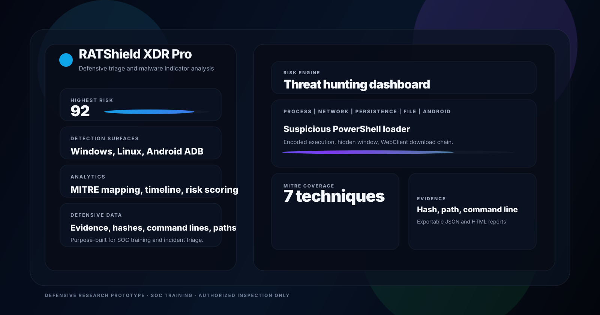
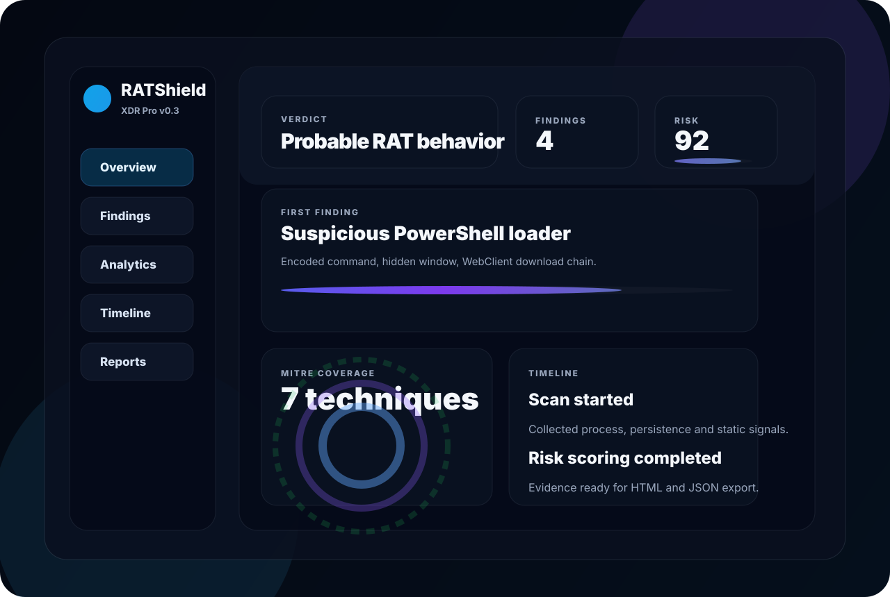

RATShield XDR Pro helps analysts identify RAT-like indicators across Windows, Linux, and Android ADB-connected devices with risk scoring, MITRE mapping, evidence capture, and readable investigation reports.

Clear views that help you understand the story behind the signal.
Severity, confidence, verdict, and summary counts automatically normalize the findings list into analyst-friendly results.
Looks for PowerShell loaders, scheduled task masquerading, LOLBins, screen capture, and email-based exfiltration patterns.
Produces JSON and HTML reports with hashes, paths, command lines, recommended actions, and MITRE ATT&CK mapping.
Analyzes permission clusters and service indicators for privacy-sensitive or persistence-style mobile malware behavior.
Designed to support trusted process, path, and hash suppression so clean environments stay readable and actionable.
Safe demo mode makes it easy to show the product to visitors without using real malicious payloads.
These visuals are reusable for the app, README, and GitHub Pages.

Simple enough to explain. Strong enough to triage modern RAT tradecraft.
Patterns inspired by modern weaponized malware workflows.
Run the dashboard locally in a few commands.
python -m venv .venv
.venv\Scripts\activate
pip install -r requirements.txt
uvicorn backend.app.main:app --reload --host 127.0.0.1 --port 8000Open http://127.0.0.1:8000 for the dashboard and use the demo scan first to explore the UI safely.
This repository is strictly for defensive research and authorized inspection.
The project contains no exploit payloads, RAT builder, or offensive automation. It is intended for SOC training, malware analysis exercises, endpoint triage, and safe classroom demos.